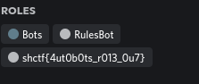
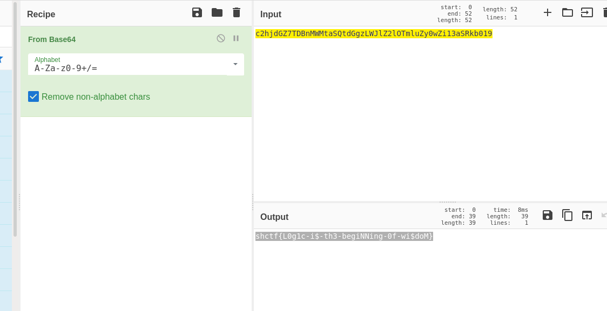
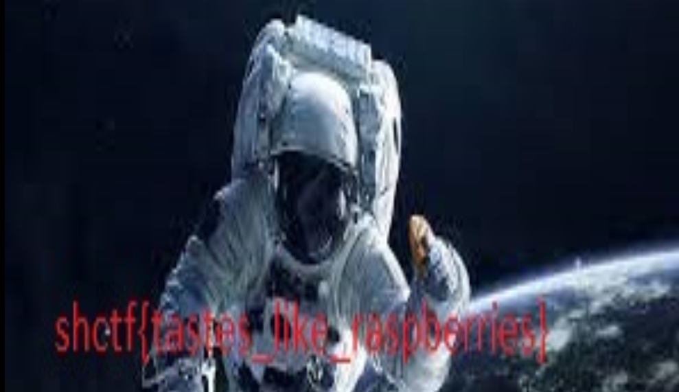
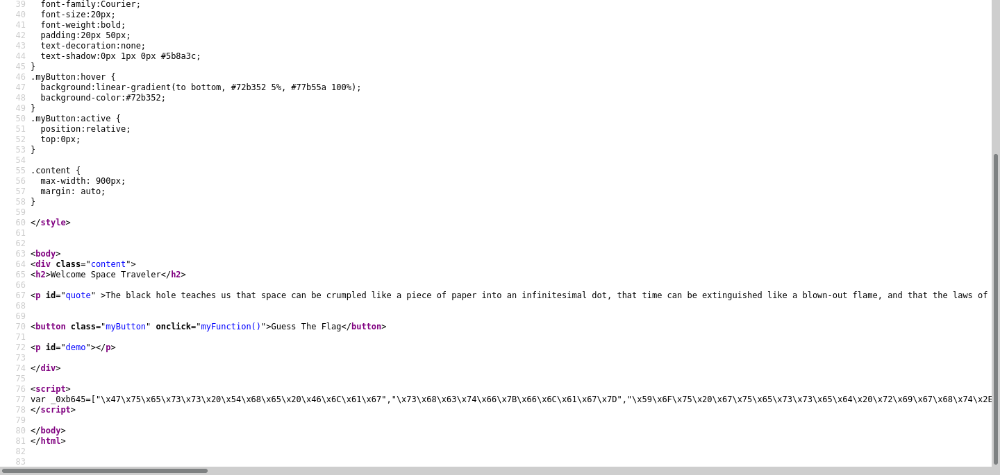
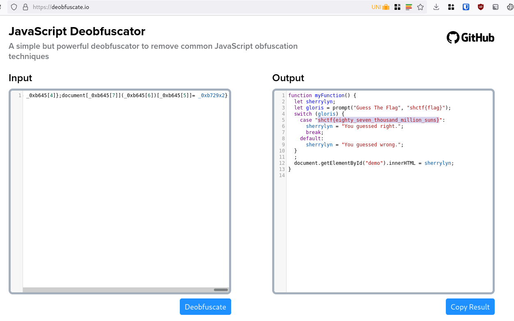

Writeup: Space Heroes CTF
Table of Contents
Introducción
Tomé parte en el space heroes CTF del fin de semana de la primera semana de abril del 2022 y la verdad es que me divertí. A continuación son las soluciones a los problemas que logré hacer.
SANITY CHECK
1. Discord
Estaba en los roles de los bots.

Forensics
1. Star Pcap
Nos dan un archivo llamado star.pcap. Mi primer instinto es abrirlo
en wireshark, aquí vi que solo un caracter cambiaba entre cada uno de los paquetes
de screenshots. Decidí anotar la serie aleatoria de letras y números.
c2hjdGZ7TDBnMWMtaSQtdGgzLWJlZ2lOTmluZy0wZi13aSRkb019
Metí a CyberChef la cadena para ver que pasaba y efectivamente, pasó algo, la serie
de letras aleatorias estaban codificadas en base64.

shctf{L0g1c-i$-th3-begiNNing-0f-wi$doM}
2. Future Stego
Como tenía el nombre de stego pensé en esteganografía ( estudio y aplicación de técnicas que permiten ocultar mensajes u objetos, dentro de otros). Te daban dos imagenes, una de referencia y otra en donde estaba la bandera.
Figure 3: Imagen de referencia para el problema Future Stego
Figure 4: El problema de Future Stego como tal
Entonces decidí usar las herramientas clásicas para ver si tenían algo dentro.
steghide extract -sf shuttlesteg.jpeg
Y después de pelearme un poco con la contraseña que requerían (ya que el único punto de partida
era la otra fotografía) logré conseguir la contraseña (que era sallyride).
shctf{weightlessness_ is _ a _ great _equalizer}
WEB
1. R2D2
En el sitio web salía una foto de R2D2 (el personaje de star wars) y pensé que tal vez tenía algo que ver con que son robots. Entonces cheque /robots.txt y efectivamente ahí estaba la bandera.
{kind=link}
shctf{th1s-aster0id-1$-n0t-3ntir3ly-stable}
2. SpaceBuddies
Como te mandaba directamente a una validación de usuario, pensé que tal vez modificando las cookies
podría encontrar la solución del problema, ya tienes los usuarios específico para eso, son los nombres
de la película de Spacebuddies.
Cambiando la cookie de whoami a Mudbud te aceptaba la página y ya te dejaba pasar.
De:
a

3. Space Traveler
Vi el código de la página y el javascript estaba obfuscado.

Quitandole el obfuscamiento consegui la bandera.

OSINT
1. Curious
Reverse Image search y Yandex tenía la respuesta.